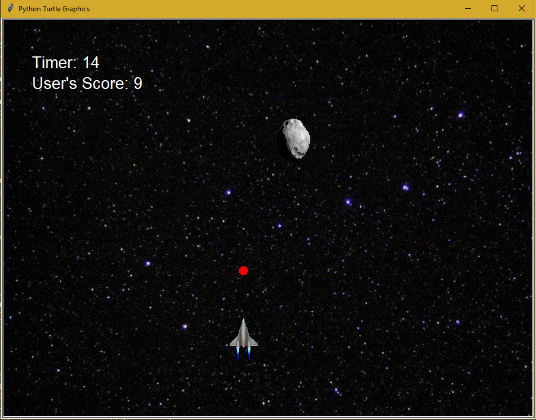

Home
Portfolio
About Me

1.1.9 Final Project: Dawn to Dusk

For our final project in 1.1.9, we created a project that simulates the passing of one day continuously. The scene we created consists of a house, a few trees, and a sun moving in the sky. The sun moves across the screen until it "sets", and the moon "rises" on the opposite side of the screen. The background is light blue during the day and changes to dark blue during the night.
1.2.5 Final Project: Rocket Blast

Our project is a game with a user controlled rocket in space that dodges and shoots at meteors that fall down from the top of the screen. For every meteor that the user destroys, five points are added to the score. If a meteor reaches the bottom of the screen, one point is deducted from the score. The user has 30 seconds to get as many points as possible.
1.3.1 Final Project: Cannonball

For this chapter, we decided to make a game called cannonball. There is a user controlled cannon and a cannonball which is shot from it. The user must line up the angle of the cannon with the targets, which move across the screen from right to left. Every time the cannonball hits a target, the score increases. But if one target makes it past the left edge of the screen, the game ends. We also made different game modes which make it easier and harder to play depending on the player's choice.
Scratch Project: Flappy Balls
This is the 1st project we made in Scratch. It is called Flappy Balls. In this game, the user uses the up and down arrow keys to control a ball and dodge the obstacles that move across the screen while changing their appearance. When you start the game, background music starts. The goal of the game is to get the highest score by dodging as many obstacles as possible. If you touch one of the obstacles, you lose, the music stops, and the background changes as seen in these images.
Black Jack game written in Python.
Modified bits in pictures.
Use data files to create graphs.
Using netlogo do remix of illusions.
Interactive Fiction Rags to Riches.